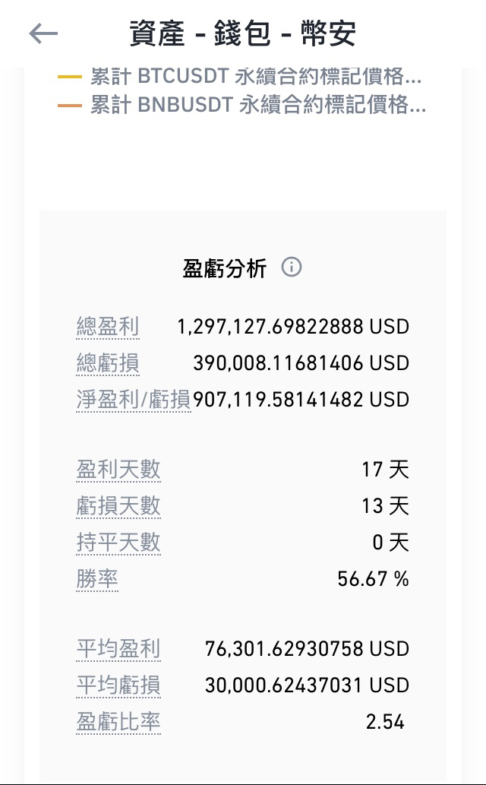
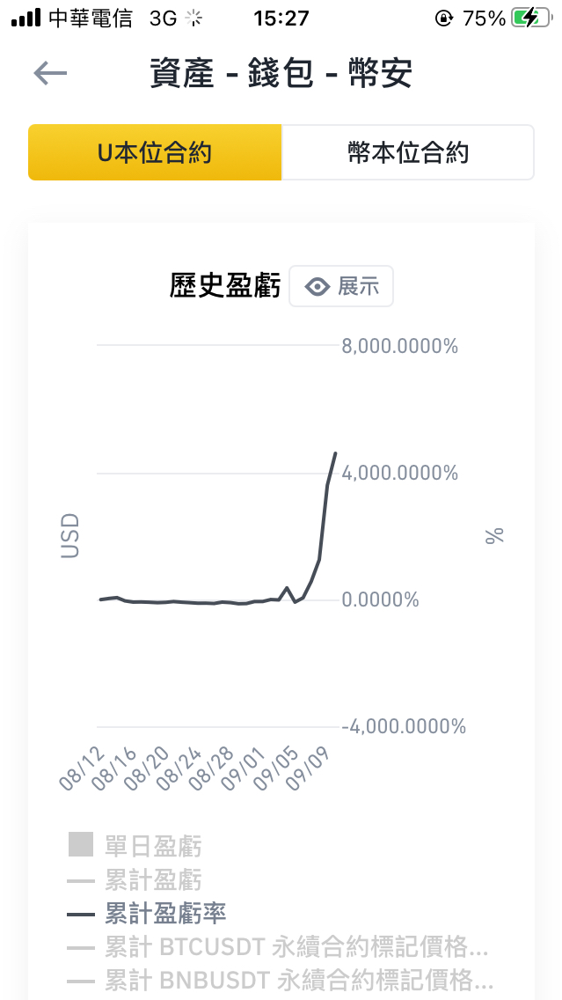
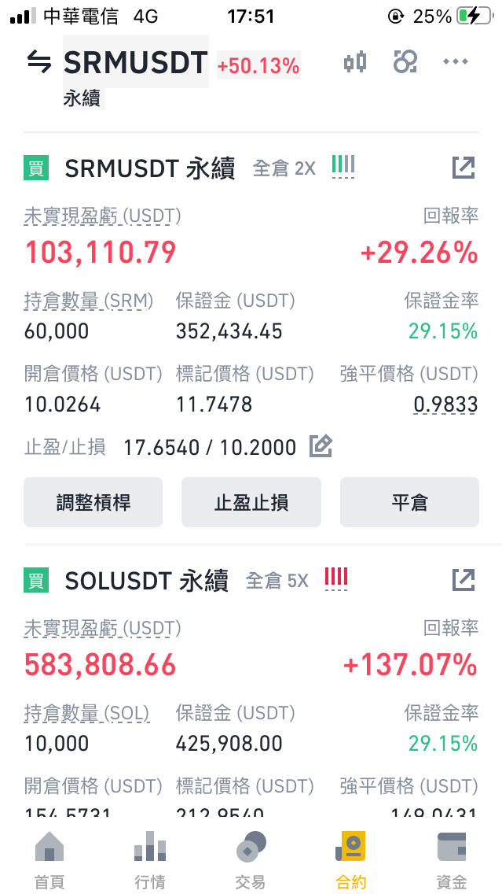
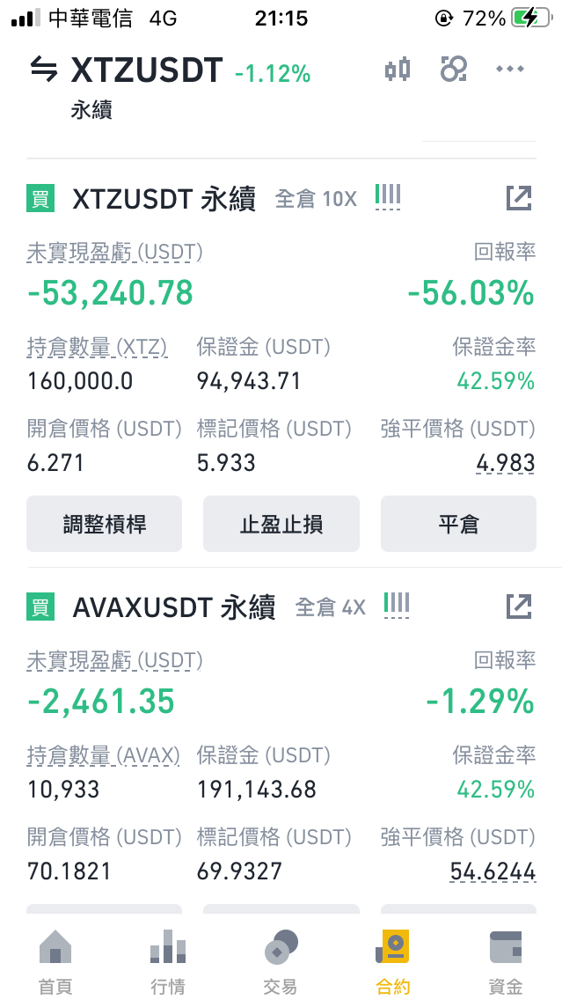
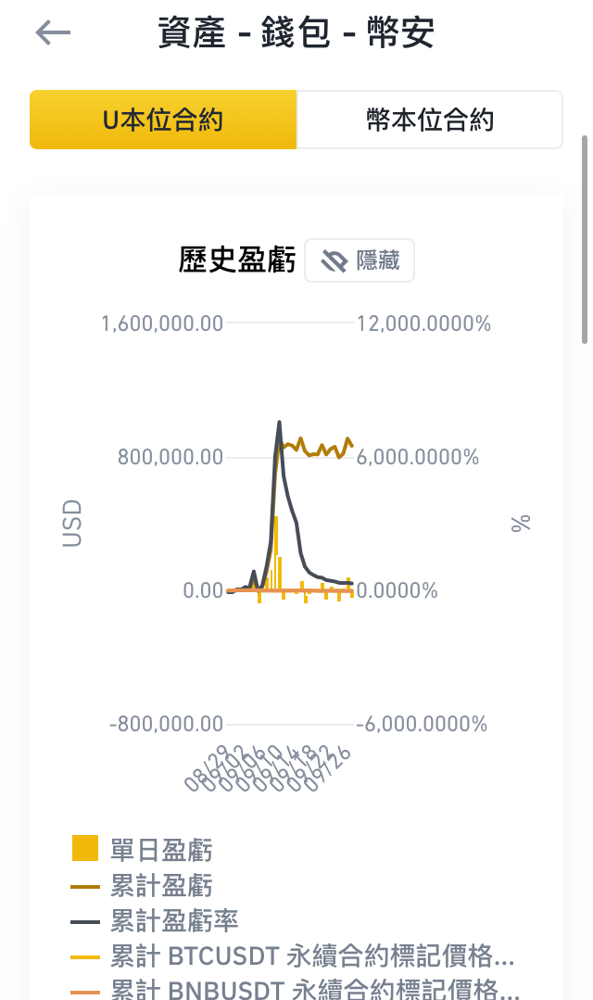
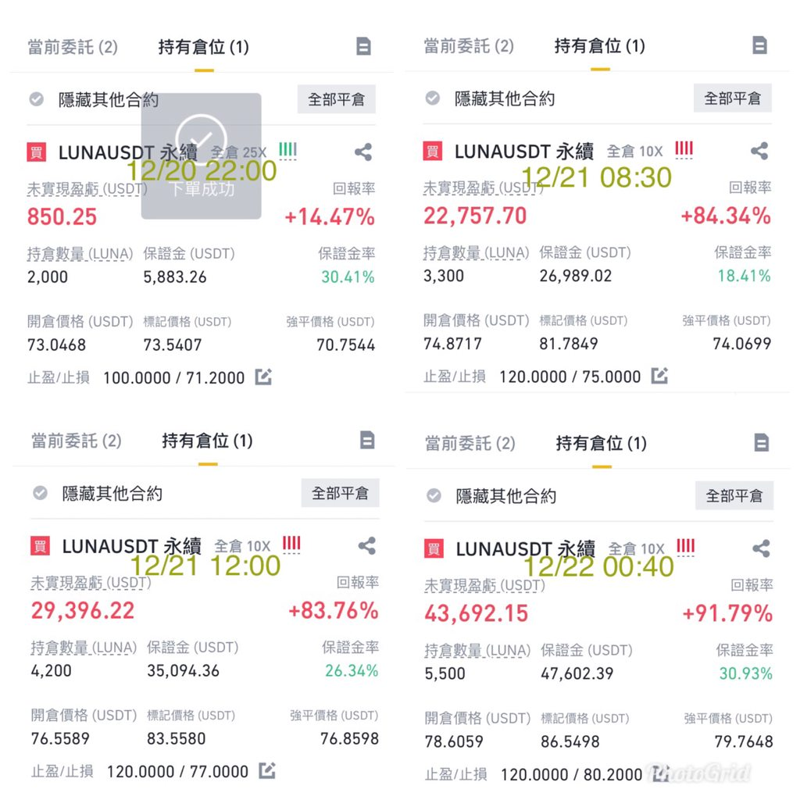
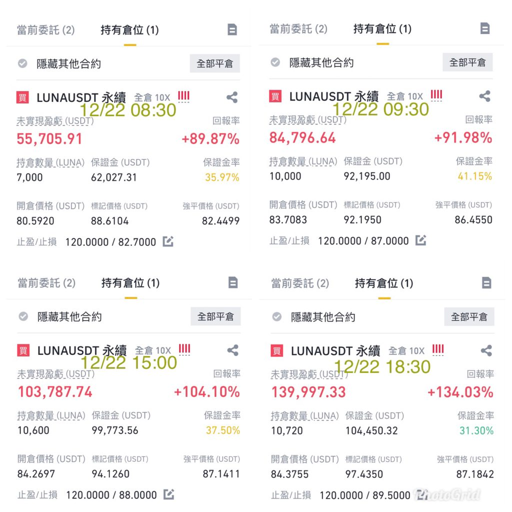
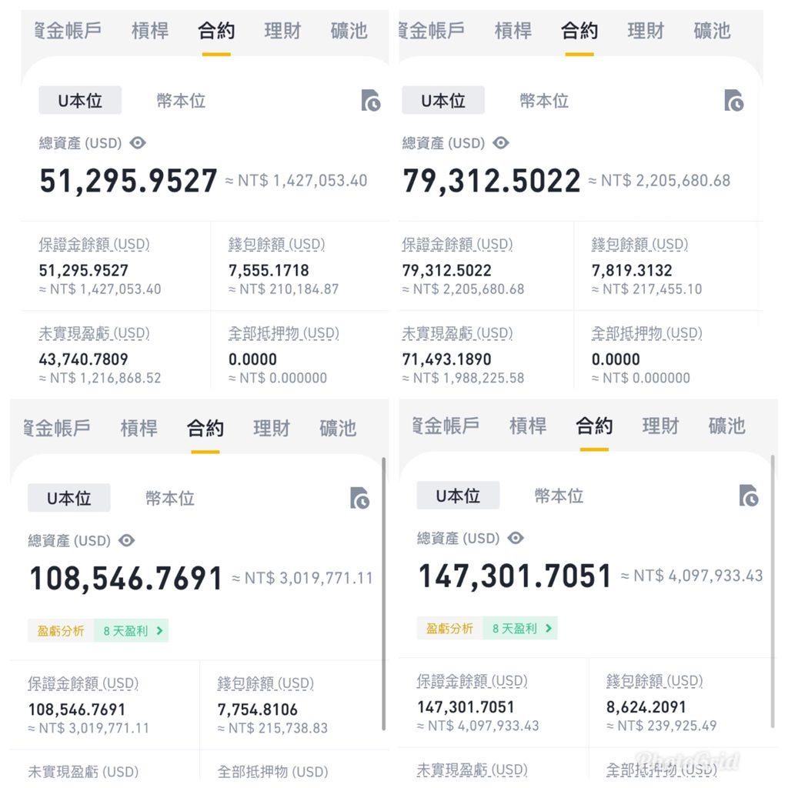
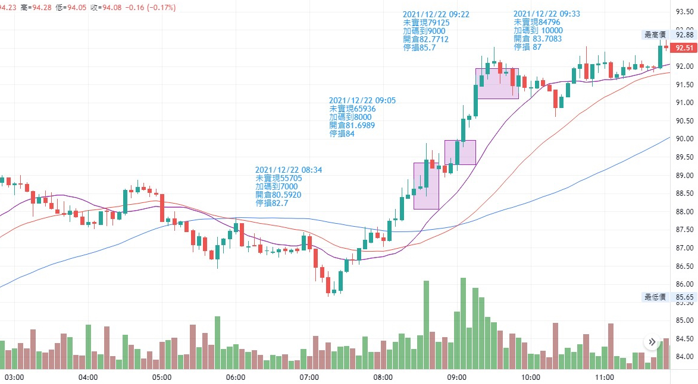

投資(投機)的觀念與心得分享
本來想用「30萬3天賺3000萬」當標題
但想想可能過於聳動會害到正確的投資觀念，故作罷。
持續收到很多來信詢問，就打一篇分享給各位參考
投資邏輯策略甚至是心態養成也絕對不可能僅靠一篇文即可達成，需要持續修練
先給幾張鄉民最愛的截圖(九月份統計與曾經的未實現損益)





虛幣近期的操作運氣不錯，常常運氣不錯的話，就需要點實力
整個九月份總計約+90萬鎂(+130萬鎂與-40萬鎂)，初始本金為1萬鎂
勝率與盈虧比在月底時因盤整開始下修，尤其盈虧比由4.5下修至2.5左右
嚴格算應該是月初時3天內+100萬鎂，接下來都在損益兩平打醬油居多
前情提要
1.從大學時期就對研究投資領域深感興趣，大學時期就從股票開始做起
後來因緣際會下轉戰國外外匯期貨原物料，直到最近半年較開始積極操作虛幣
所以整體投資(投機)經驗歷程有相當的時間，
累積下來的進出操作次數可能比吃過的飯還多，至少，目前還存活在市場上: )
2.本人完全技術分析派(曾經也使用過各種派別)
堅信在任何基本面、消息面、應用面、籌碼面等各類陽春麵、牛肉麵
最終都會經過市場消化後反映在價格走勢上。
所以坦白講，對近期操作過的幾支貨幣則完全不瞭解在幹嘛用的
對我來說只要走勢型態符合我想要揮棒的好球，就會揮棒，化繁為簡，簡單穩定。
以下幾點投資(投機)觀念分享給各位
「成功的交易(員)，80%靠心態，技術僅佔20%，甚至不到」
「成功的交易(員)，80%靠心態，技術僅佔20%，甚至不到」
「成功的交易(員)，80%靠心態，技術僅佔20%，甚至不到」
很重要，所以說三次，這第一項的觀念最重要
沒有時常把這句放心中，以下再多的正確觀念、再強的技術都沒用
如果沒有穩定的心態素質與遇挫敗冷靜處理的情緒，
即使有超過95%比神還神的神奇指標工具，最終也會因為那不到5%的風險出現一夕翻船
2.「能抓老鼠的就是好貓」
上述有提到我是以技術分析來操作，但我不會鄙視任何的方法
只要能夠有一套穩定的交易策略邏輯，哪怕是參考農民曆投資術只要能賺錢就是好方法
因為我們來到市場的目的是要為了獲取財富改善生活，而不是做論文爭辯你輸我贏
只有贏過市場才是唯一目標，既然目標已有，
那應該把重點放在體認自我個性何種方式適合自己
明明不適合作短線的料，看著旁人利用策略賺快錢，盲目跟從，烙賽居多。
明明個性耐不住抱好幾年，卻羨慕N年前比特幣買披薩的價位，
且說白了，即使買了也不可能抱到現在
別羨慕有人能「睏霸數錢」，因為你如果下完單無法安心去睡，整天緊張兮兮
最重要的睏霸都做不到，是要如何睡醒數錢
唯有先了解自己，才有辦法克服自己，找到舒服的獲利方式。
3.「現貨、槓桿、合約保證金」
投資投機的順序千萬不能錯，先做現貨，
成功了再試著提槓桿，駕馭了，再嘗試合約保證金
大部分輸慘的行為都是順序相反，先做合約，
輸光了只好被動降槓桿，再輸沒錢只能買現貨
如果還不會騎腳車，那就千萬別學騎機車開汽車，穩定了再往開高鐵開飛機的交通工具
相反的，如果順序顛倒，遇上狀況無法處理那就是整車對撞
切記，如果現貨都無法賺錢，走上槓桿保證金只是死路一條
4.「試著控制虧損，不要想控制獲利」
市場上千變萬化，走勢千百種，能做到的只有控制虧損，期待獲利
既然能賺錢就代表走在趨勢道路上，不要每次下單後遇見獲利就急欲分手，專情一點
每當我下單時，最大的虧損就在下單那刻已決定訂死，
只要走勢如預期就是不停上調停損直至出場條件達成時，
虧損只會越來越小甚至即使出場仍然是獲利
當能夠駕馭虧損風險時，就能再繼續雕琢進出場點來增加報酬
5.「勝率不是唯一，豐厚獲利才是」
效率市場對於決定下單後的勝敗是快速展現，
要能夠一直承認自己犯錯而停損是非常違反人性的
但也因為人性不喜歡認錯，所以才會凹單，10次凹對進而凹下一次，一次凹錯就抬去種
大部分績效有問題的都是數次小賺抵不過一次大賠，
想辦法讓自己的績效成為多頭排列格局
穩定不落差太大的勝率，加上適當風報比例的搭配(通常我都抓2.5至3以上)
最後結果就是大漲小回(大賺小賠)
6.「本多不一定終勝，本少也不一定賺不了大錢」
這邊要特別澄清，因前陣子對帳單被分享出去，
有人誤以為是因為本金大才有大數字獲利
但其實本多終勝，這句話是對也是錯，希望別被誤導了
如果今天做的是現貨，那本多的確絕大部分都是對的，
就算當下錯了，可以靠著時間來彌補錯誤
(凹一輩子凹不過，也可以隔代凹XD)
如果今天做的商品有牽扯到槓桿與時間性，沒有正確的觀念即使再多的本，
縱然有幾千萬幾億的本金也是會財富轉移全軍覆沒
另外，本金大是否有辦法扛的起金錢數字跳動，
每秒幾十萬(有些人是百萬千萬)的跳動還能冷靜處理，這又是另一個心態層級的問題了
至於本小則有本小的彈性，操作策略靈活與可用工具較多，
並非無法由小錢變大，即使要這本金腰斬也要經過連續性的挫敗與情緒崩壞
但在良好的風控下，理論上是可以穩定向上，遇上良好契機一次打出滿貫砲
7.「永遠不要失去希望」
如果現在放棄，比賽就輸了。
厲害的不是一蹴成功，而是跌倒了能夠再次站起來，那才是下一次風險趨避的內化。
成功的交易員絕大部分都會經歷過挫敗、破產甚至負債的狀況，
也唯有經歷過才知道在市場上永遠要謙遜且將風險擺在第一
最後也捐出部分獲利給弱勢團體(就不貼在這了)，
持續在群內提倡的就是若有賺錢且能力可及之下
將部份獲利幫助弱勢團體(尤其是孩童)，形成正向循環，
讓投資成就體現在生活上，而非只是紙上富貴而已。
其實，要講可以講很久，但也很難一次講完就都貫通，
只能把臨時想到的列出來給大家參考
期待各位績效穩定向上，加油。週末愉快
等疫情允許後，會再請人發送奶茶，謝謝
投資(投機)的觀念與心得分享(2)
雖然上一篇說過了心態第一，技術其次，但仍然有不少來信問到技術分析
我可以分享我的方式，因為就連跟單都會跟丟了，我也不怕分享我的方式
最終即使學會所有招式，沒有相對應的心態配合
一樣都是跟出事的比跟出師的還多
其實我覺得投資行為（投資方式）跟棒球比賽很像
後續會試著比喻解釋給各位去理解
可能您會難以認同或接受，但這是目前我在市場生存的方式
我也不會去鄙視長期持有派的方式，因為我自認無法達成那樣的耐性
我希望在我手上的資金在目前人生階段是高效的應用
當然，我就得承擔高效背後的成本與虧損(時間成本、交易摩擦成本、行為成本)
而且，很常看到有人說航海王、期貨王這樣天天賺不就很快超越巴菲特了
其實，如果享受過高本金帶來的效率與虧損速度
就能理解賺到的錢只是做其他資產配置而已
大部分有此階段的都不會持續一股腦投入，會將部分資產轉往低風險配置
萬一，哪怕只是0.00000001%機率出事，那不就人生完蛋？
來市場的目的是過更好的生活，不是誰要超越誰，不是嗎？
廢話不多說，以下就我使用的技術判斷方式做分享
1.「指標大部分都是落後指標」
我們通常會喜歡去設計工具、指標、參數最佳化等等的方式來預測價格變化
但，請各位想想，手上的神奇指標工具是否絕大部分都是從
「價格」、「時間」、「動能(量能)」等原始原料變化計算而來的
那麼，我們卻要利用價格計算後的結果去預測未來價格
對我來說，那已經是過去式了，最貼近價格變化的就是「價格」
價格體現在技術分析圖譜上就是「K棒」
一根「K棒」可以看出市場當下的買賣力道的行為變化
一群「K棒」可以看出市場趨勢下的買賣力道的行為變化
因此我的看盤工具就單純只是一支IPHONE+三條均線
沒有太複雜的介面工具，沒有華麗的指標進出，單純就K棒與均線
(這也是常被群裡靠腰的原因，不專心學，重點都放在截圖裡電池電量偏低XD)
如果此時你好奇我均線的參數，那又回到此題初始命題
“過度的追求最佳化參數化的行為”
況且，均線也就只是價格的平均做呈現，仍然是屬於落後指標
「均線對我而言是判斷趨勢，不是用來判斷點位」
所以才有很多說什麼黃金交叉、死亡交叉不準啦騙人啦
2.「強者恆強，跟人一樣」
一群標的裡面，以任何的平均概念，至少能分出強勢與弱勢各一半
再從各一半的群體裡面去找尋想做單的標的
以臺股而言我就抓大盤加權指數，大盤是一個群體的概念
比她弱的股票代表輸給一半的股票績效
加密貨幣我則以比特幣為基準，做多我選比她強勢，做空我找比她弱勢
這樣至少確保我能贏另外一半的績效
這其實跟人很類似，跟人性也類似
人的群體裡就是強者恆強，尤其在交易市場的行為呈現更是如此
與其期待輸家翻身，不如壓注贏家的概率報酬
你是總教練的話，你會排強棒還是排弱棒來贏得比賽
當然是把隊上的強打者排上打線，拚獲勝機率
3.「追價行為大可不必」
不是不能追價，而是不知如何使用時卻誤用、混用，通常下場都是虧損居多
因為追價行為就是一種過度曝險，長期統計要賺錢的必然結果是盈虧比要好
盈虧比在追價行為下要維持穩定
要馬就是追價後的價格順利突破比原先預設的出場點還高
不然就是要縮小停損點區間來控制虧損比例
不管哪個方式對於操作來講都不容易達成
而且，試問，為何要做出這種行為？因為通常都是情緒心態使然
怕現在不買買不到了、怕沒機會了、怕再不放空就要跌死了
「情緒告訴你快要失去財富自由機會了，但通常都是失去財富」
如果沒等到好球，就盡量別去追打球、追打壞球
世上沒有哪一個強打者是以追打球而成功的，都是鞏固好自己好球帶
即使沒球打選到保送（等待下次機會），也不會出局。
該做的是「追逐趨勢，而非走勢」。
4.「你的空頭是我的多頭」
使用的時間週期不一樣，預判的想法自然會不一樣
試著讓自己的進出條件一致，出錯也比較方便事後檢討
單純針對自己的標的物做判斷
常被問到會不會參考大哥走勢，怕突然插針之類的
奇怪捏，會怕的話幹嘛不做大哥就好，這樣要不要擔心明天天氣影響的蝴蝶效應
擔心太多擔心不完，擔心自己手上的走勢比較簡單
也常被問如何看，怎麼看，我通常都回用手機IPHONE看阿
別人的看法只是讓自己心安，讓自己鴕鳥
你看出的空頭，可能只是我週期裡的多頭修正支撐，做出相對應的動作即可
下次再問怎麼看，不如外出走走看看河岸、看看夕陽很美。
5.「要如何調整停損、停利」
這也是一直被問到的，常常走勢如預期方向走，但調了又回來把部位掃掉
最基本的原因就是太快調整，太快調整的背後原因就是怕虧損或怕獲利跑掉
這就又回到一開始講過的心態問題，怕虧損就降低槓桿、降低下單倉位
會怕獲利跑掉只是因為沒有嚐過一次大賺的甜頭
享受過豐厚報酬自然不會怕，反而會擔心正在獲利的時候倉位不見
而技術上，要先認清你自己的週期
你策略是60分K週期進場，然後因為15分拉出長紅長黑後就調整
下一根出現反向吞噬就直接把你掃掉，然後60分K仍然照著既定的時間續走
最後60分K走出大波段，才在哀怨是莊家掃我啦，故意的啦
是自己害自己的吧？關莊傢什麼事？
莊家會動用一堆資金為了掃你小單嗎？會不會覺得自己太重要了？
再來60分K的價格波動如果平均是1%，你在此週期進單下設0.3%停損
請問是在送錢還是錢太多在玩大富翁，哈囉哈囉！沒有紅卡黑卡就醒醒吧！
其餘有想到再編輯補充好了，先來去吃個豐盛早餐(中年肚子越來越大惹)
投資(投機)的觀念與心得分享(3)
開始前先提一下近況，自從9月多海尻三千萬後
直到最近都沒有太大的績效起伏，甚至總體來說賠錢居多
這是因為順勢交易遇到盤整必然會開始呈現撞牆期
撞牆期要克服的就是如何降低虧損，詳細後續會說明
(不管何時何種的交易方式，都是以降低風險為第一考量）
近期較成功的一筆單子則是LUNA
初使本金20萬，最高未實現獲利約400萬，實際獲利約180萬，可惜沒一鼓作氣衝上去，不 然也是筆千萬單了，運氣沒有來
總計耗時3天(幣圈算30年？)，操作方式仍然是一貫的拿未實現獲利做加碼，也因此餘額 本金維持在20左右，後續也是同樣的被系統風控降槓桿在5-10倍




(感謝有心人幫忙整理此圖)
分享幾個技術方法與心法給各位
當然還是要強調原文的第一點
「成功的交易(員)，80%靠心態，技術僅佔20%，甚至不到」
\1. 「上漲下跌的型態都差不多」
會上漲會下跌的型態都長得差不多那樣，那是因為趨勢才是真正的力量 順著趨勢會有 一定的脈絡可循
從最小的點位，產生了價格Ｋ棒，再由數根Ｋ棒形成面向
最後由這些不同呈現方式形成了型態
也因此常常有人問我要怎麼增進功力
忘了有無提過，剛開始接觸時曾經每天將所有臺股的線圖都看過一遍
這個功課至少做了一年，真的就是每天看每天熟悉
現在如果有空我也會偶爾看看，大致能知道臺股現在的狀況及找到好標的
當時也許全部看過需要花個三小時以上，現在則是三十分鐘內搞定
漸漸的自然而然會有一種感覺，如同一開始講的
「會上漲會下跌的型態都差不多，瞄一眼就知道會漲會跌哪個機率大」
成為真正的大廚師前，哪位不是在廚房先洗碗洗韭菜
學會少林功夫前，哪位不是先掃地打坐好幾年
別小看這種持續累積的力量，即使告訴你這麼做可以增進功力
還是有人無法做到，其實這也是練習心性的一種方式，穩定性
2.「下跌找鑽石、上漲防爛貨」
從Ｋ棒型態可以知道當下發生什麼事，也因此從下跌走勢中更能看出抗跌標的
當時的SOL、前一陣子的SAND、及最近的LUNA都是這樣找到的 (這裡要偷偷抱怨SAND，當時掛了4.82要接貨，結果最低只到4.84後一路噴向8，此筆單如 果能夠吃到也是海撈千萬的單子了，人森啊QQ)
至於為什麼會抗跌我也不會去深究，我就是知道當下她特別抗跌
有人買就不容易跌，這些人這些力量為何敢在下跌崩跌閃崩時去買
我不需要知道理由，我只需要跟著這些趨勢動能力量即可
願意在下跌中去進場吃貨的標的，其未來上漲的機率絕對遠大於其他標的
相反的，在市場多頭同步上漲時，絕對有落後的標的
此時反而要特別留意手上的標的是不是特別弱勢
防止自己因為盤勢大好的時候而忽略了績效落後的風險
至於怎麼找怎麼判定則是更進階的技術，後續有機會再討論
3.「順勢交易的撞牆期」
趨勢一旦成型，勢如破竹擋都擋不住
這是因為一旦走勢方向呈現更種訊號買盤都一致認同的時候
會是正向的動能持續累加上去，此時是最容易賺錢的時刻
但往往絕大部份的人都會在此時迷失在賺錢的快感中
客觀來分析，走勢不可能永遠多頭永遠空頭
漲勢中必然會有「盤整修正」，跌勢中必然會有「盤整反彈」
也因此絕對會有出現「盤整」的時刻
遇到盤整時刻可以從自我績效去發現
如果都固定使用順勢交易，但績效開始呈現不穩定
那很容易察覺是順勢策略不適合現在的盤整走勢
必然會遇到撞牆期的震盪與獲利回吐
該如何克服有幾種方式
Ａ完全不作單，這方式最容易避免虧損，但我知道，這點也是最難做到的，要一個賭客完 全不下場簡直比登天還難
Ｂ倉位逐漸縮小，假設策略可行且策略不變，遇到連續虧損時代表盤整機率大，適時地縮 小倉位可以保護你長存在市場中，也就是俗稱的「輸要縮」
Ｃ每一次大賺之後再將其資金拆分，等分的去做而不是無上限利滾利，通常都會死在最後 一次。但如果有做拆分慢慢玩，賺一次夠我隨心所欲玩個十次二十次連續停損都沒關係， 只要這幾十次中再被我遇到大行情就夠了
4.「情緒穩定有助於交易」
前幾天有人在IG私訊說該不該FOMO追價LUNA
如之前提到，追價的行為已經將風險無形中擴大
而且這擴大影響不是隻有短期該筆單
如此的不理性長期行為模式，會導致你走向毀滅的局面
通常遇到這種狀況的時候，因為大腦已經不理智了 我會告訴自己現在做多好還是做空 好，重複兩三遍讓自己稍微回到理性
再來可以先切畫面播放首歌聽完再做決定，往往可以避開很多大賠的狀況
冷靜期是要練到自己剋制自己，而不是靠系統幫你剋制下單
5.「主動打破紀律與被動維持紀律」
當你可以做到情緒穩定時，當然可以主動打破紀律
主動打破紀律目的在於盡可能降低虧損（即使停損點位還沒到）
這是因為綜合經驗與能力之後所決定，認為此時以較少虧損換取未來大虧損的機率
當然，你就勢必要承擔主動介入後的錯誤決定
這點並不是要你每次都盯盤看盤，然後妄猜想去主動做決定
而是要能夠融會貫通之後，即使自己主動介入後結果不理想，仍然能處之泰然
然後將這個情緒化壓到最低的位階不再影響下一筆作單
很多人也會在此時遇到「見山不是山」的局面，開始懷疑人生
那麼就乾脆回到原點重新再練
被動的維持紀律，該筆單該筆標的只會錯一次
主動介入則會有一錯再錯的無限可能
以上是我近期收到一些來信與IG私訊的回覆，盡可能把想到的回覆，但很多人都喜歡問「 加碼」這件事，沒先把基本功學好就學加碼，很容易萬劫不復，有機會再分享了
其餘心得等下次有機會再尻大筆單的時候再來獻醜吧，祝大家TO THE MOON~
1.順勢而為
2.用基礎的均線進場
3.趨勢是長時間價格變化的過程，不會只有一波，後面會有好幾波，不會太在乎第一波，很難看對第一波發動，與其猜第一波，趨勢形成進場就可以了，後面吃23456789波，吃魚肉，魚頭魚尾留給別人
4.用自己的週期去判斷走勢，抓單一週期操作比較不會失真(4h/日/週/月…)
5.心態的波動，與金額大小有關，每個人都有自己的承受度
6.進場有停損點，最多就賠這些錢，進場前已經先評估完成
7.不可能每一次都賣在最高點，達到設定目標的單，就可以開始停利跟移動調整停損價格，都是獲利，回測太深沒關係，畢竟停損已經往上修正
8.情緒跟市場沒有正相關，不用太在意市場雜訊
9.常停損原因，固定”行為”或是固定”策略”出了問題？需復盤，檢討績效，是行為問題？還是策略問題？
10.操作連敗也沒關係，修正之後，以後應該會減少，連敗可能也常發生，舉例上半年，沒有波動，很常上半年都在停損，上半年可能就修正停損點，心態要穩定，行為+策略需檢討，連敗2~3次，很常發生，若10次以上需復盤檢討
11.沒有用太多工具，基本上就交易所的K線圖，工具/指標的背後意義要先了解，才能針對市場操作，像是做趨勢，就以30日/45日/60日均線
12.圖表會有相似度，看久了會有共感，久了容易找到標的，也可從強勢標的找，如果漲勢跟趨勢符合就從裡面挑選
13.不太看消息，所有的訊息都會呈現在價格上，不好復盤
14.進出場點位否符合進出場邏輯，如果檢討之後發現有點偏離自己的策略或是行為，這次的單，心態不能太膨脹，錯過的單也可以檢討，自己的策略在這個圖形是否能吃到，沒吃到是否需檢討？若沒有，維持一樣既有模式就可以了，在自己的守備範圍內賺到該賺到的錢就可以了
15.專注多方原因：上漲無限，下跌有限
16.對於幣圈整體大環境，ETF如果走入大眾生活，應會是正向的發展
「趨勢成形, 創新高，沒出量 沒爆量→穩穩漲定了」
基本面：不會看
籌碼面：不知道
消息面：不相信
技術面：
1、三線走揚，多頭排列，中期確立
2、近期紅K盤整抵抗，支撐穩定
3、未見爆量，量價齊揚
4. 進退場機制：
進場價：28以下
停損價：24
目標價：40
風報比：約3可以接受